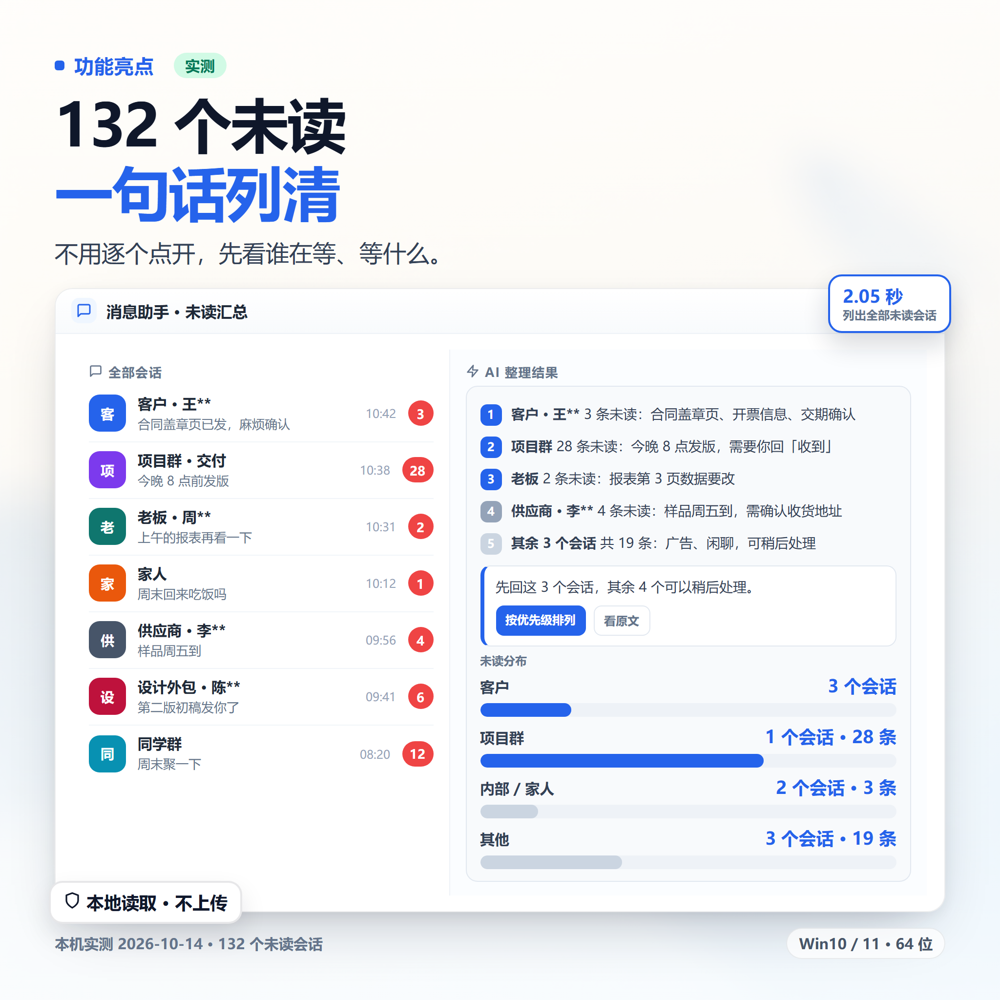
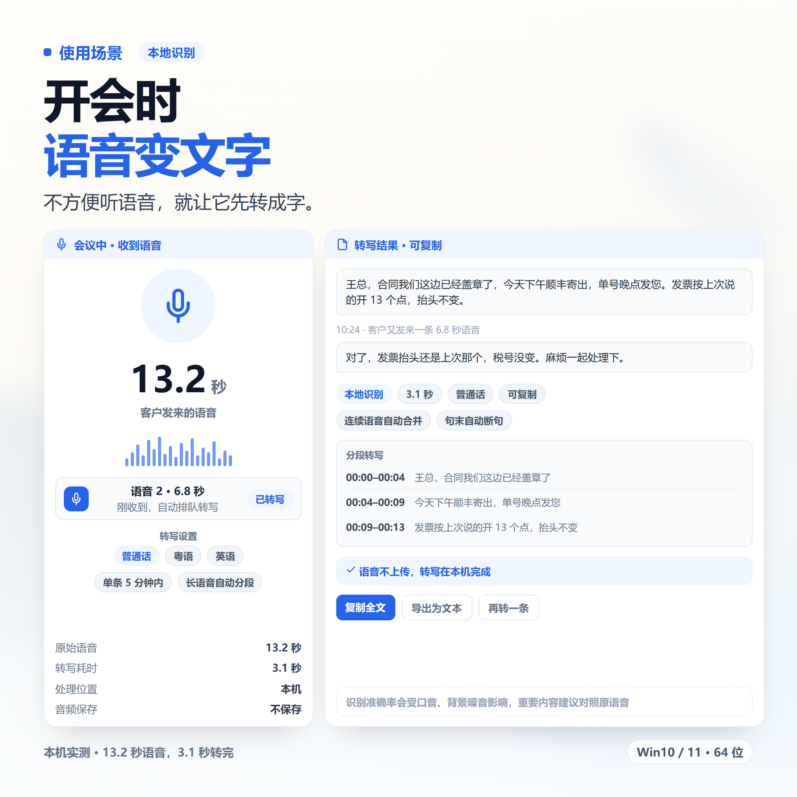
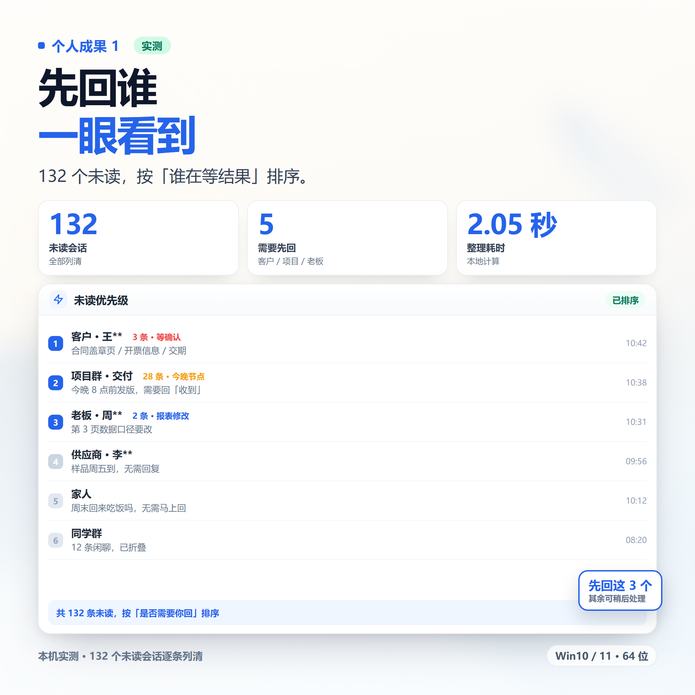
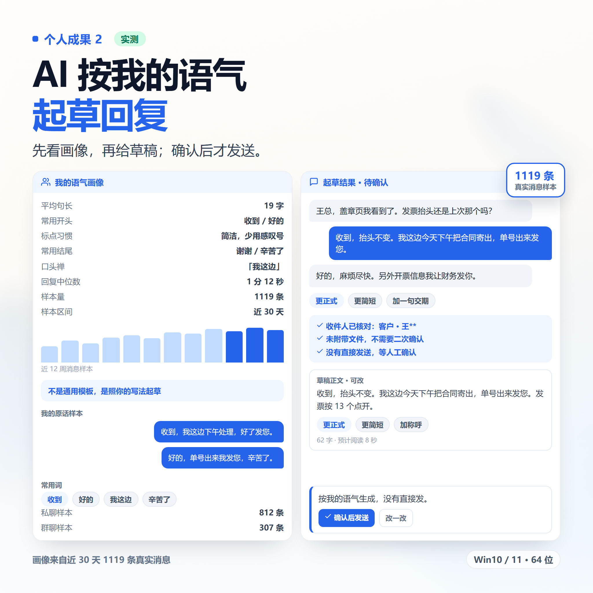
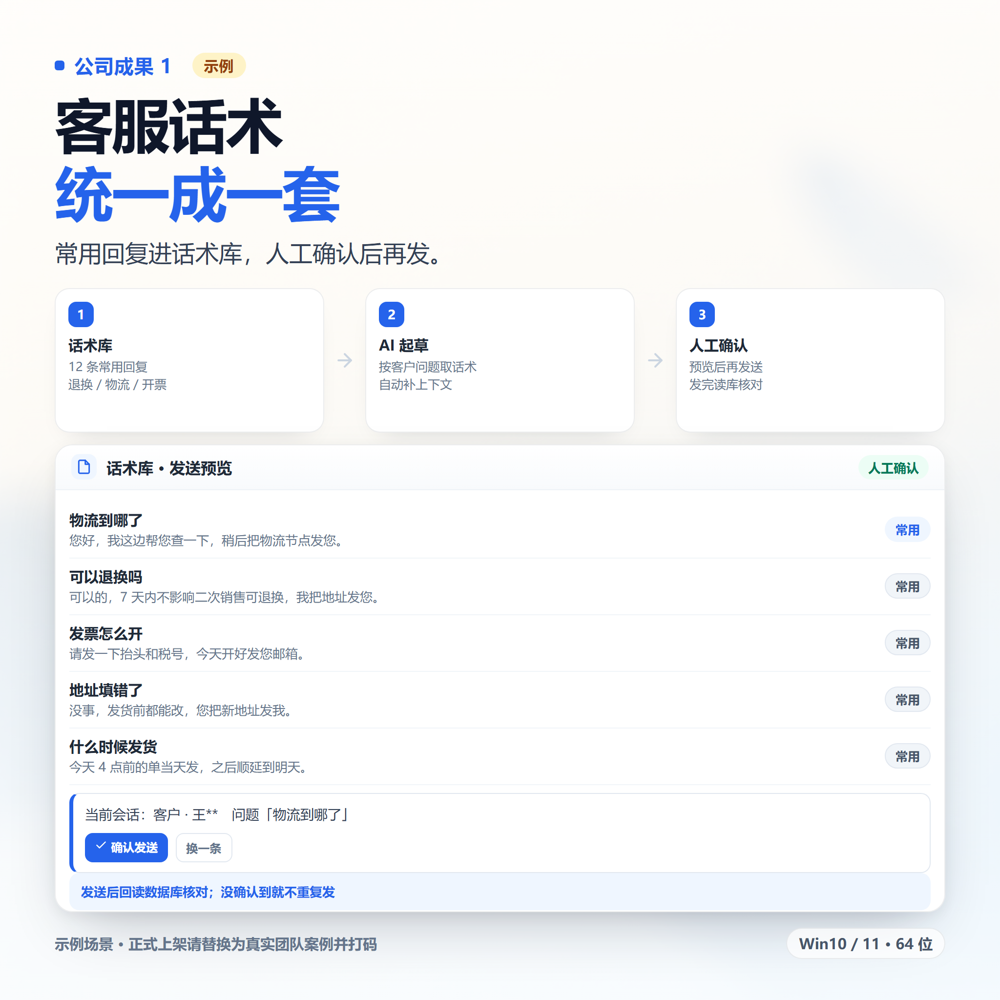
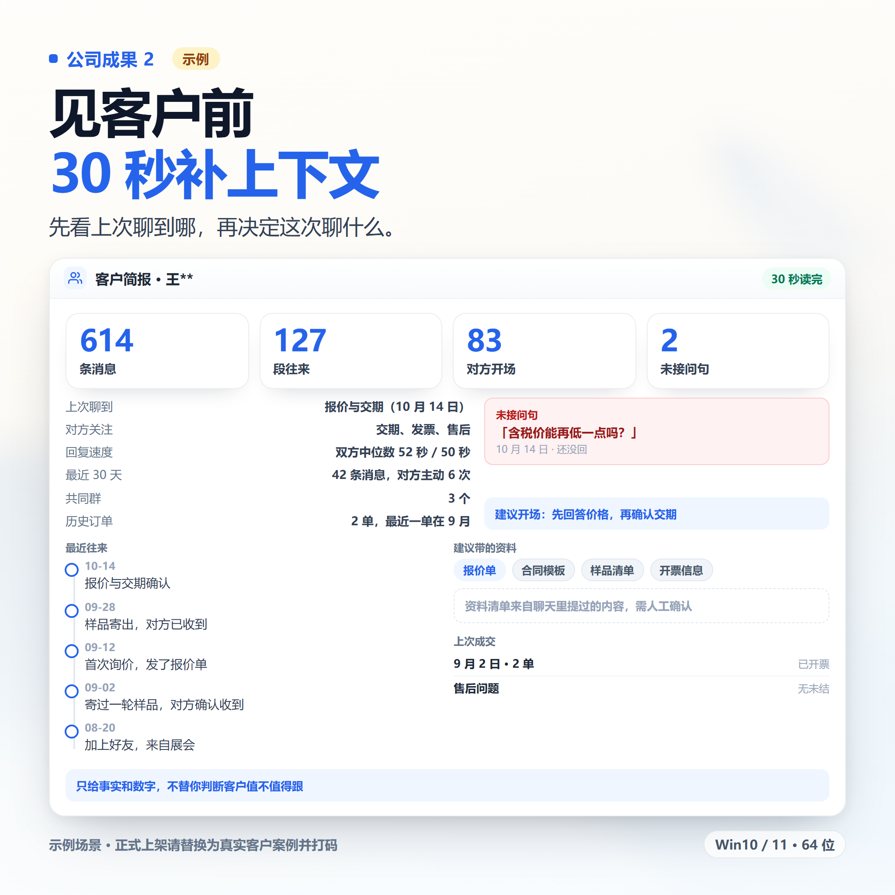

1标题（30 字内，三选一）
WX电脑端消息助手 AI帮读帮回 本地运行 送教程
备选：
WX消息助手 AI整理未读 语音转文字 含安装教程
VX电脑消息助手 起草回复 确认后发送 送远程安装
2商品描述（直接复制）
【核心功能】 · 未读汇总：列出哪些会话有未读、各几条、最新一句 · 消息检索：按会话、时间段、关键词搜文字和文件 · 图片读取：AI 直接看聊天图片，标明高清还是缩略图 · 语音转文字：本地模型识别，13 秒语音约 3 秒转完 · 风格画像：统计你的句长、标点、口头禅，按你的习惯起草回复 · 发送消息：文字、文件、多目标分别发送、引用回复 · 发送校验：先预览，确认后再发，发完读库核对 · 后台发送：不抢鼠标、不动剪贴板，锁屏也能发 · 环境修复：窗口最小化或尺寸异常一键还原 【适用场景】 消息多，先看该回谁；开会不方便听语音；让 AI 按你的语气起草回复；找上个月的图、文件或某句话；锁屏时补发消息。 【优势】 · 不注入、不改 WX 客户端，读取只读 · 聊天内容、语音识别都在本机完成 · 认不准目标就不输入，宁可报错也不发错人 · WX 4.1.15.x 真机实测通过，未验证版本会明确提示 【定制服务】 群运营助手、专属话术库、消息分拣日报、语音/图片批量整理。按你的流程定做，报价另议。 【发货与安装】 闲鱼聊天窗口发安装包和图文教程。Win10/11 64 位，WX 电脑版需登录并运行。装不上可远程协助。 【拍前须知】 · 仅支持 Windows 电脑端 · 只能读本人账号、本人电脑上的数据 · 发出的消息不可撤回 · 软件有使用期限，以拍下规格为准 · 虚拟商品，发货后不退不换
3标签
WX工具AI助手消息助手
未读整理语音转文字本地软件安装教程
4图片方案（三类 6 张）
前两张讲功能亮点和使用场景，中间两张放个人成果，最后两张放公司/团队成果。6 张图已生成到 images/message-assistant/，可直接上传；个人和公司成果是演示示例，正式上架建议换成真实截图并打码。






图里不要出现联系方式、二维码、平台名和「外挂 / 破解 / 永久」等字。公司成果两张必须换成真实案例。
图片底图由 ComfyUI 生成，界面和数据用 HTML 排版后导出；文件 2048×2048，平台上传会自动压缩。
5拍前问答话术
| 买家问 | 这样回 |
|---|---|
| 装在哪里？要另开软件吗？ | 装在你自己的 AI 助手软件里（Claude、Cursor、VS Code 等），不用另开一个程序。 |
| 能帮我发消息吗？ | 可以，默认先给你看，你确认后才发。支持文字和文件。 |
| 手机能用吗？ | 不行，只支持 Windows 电脑端。 |
| 安不安全？会不会被限制？ | 不改原软件、只在本机读数据、发送前要你确认。任何工具都不承诺零风险，介意勿拍。 |
| 怎么发货？ | 闲鱼聊天窗口发安装包和教程，装不上远程协助。 |
| 能便宜点吗？ | 标价就是实价，已经按单套算的。可以先拍基础版试，合适再补差价。 |
6本款容易踩的词
| 不要写 | 换成 |
|---|---|
| 微信全称 / 微信号 / 加微信 | WX、VX |
| 插件 / 外挂 / 脚本 / 注入 | 工具、小助手 |
| 自动回复 / 代聊 / 机器人 | 帮你起草、确认后发送 |
| 群发 / 批量加人 / 营销 | 不写。功能也不主动提 |
| 永久 / 无限 / 零风险 / 100% | 不写。有效期写「以拍下规格为准」 |
| 破解 / 绿色版 / 激活码 | 不写 |
7内部备注（不要发给买家）
真实卖点是「确认后才发」和「卡在哪一步会说清楚」。这两点比「AI 帮你回消息」更能降低买家的顾虑，聊天里可以多讲。
不要把「锁屏可发」说成「无人值守」；不要把「远程协助」说成「包教包会」。
买家问具体支持哪个版本时，先让他发电脑版客户端的版本号，再确认，别一口答应。
不要把「锁屏可发」说成「无人值守」；不要把「远程协助」说成「包教包会」。
买家问具体支持哪个版本时，先让他发电脑版客户端的版本号，再确认，别一口答应。